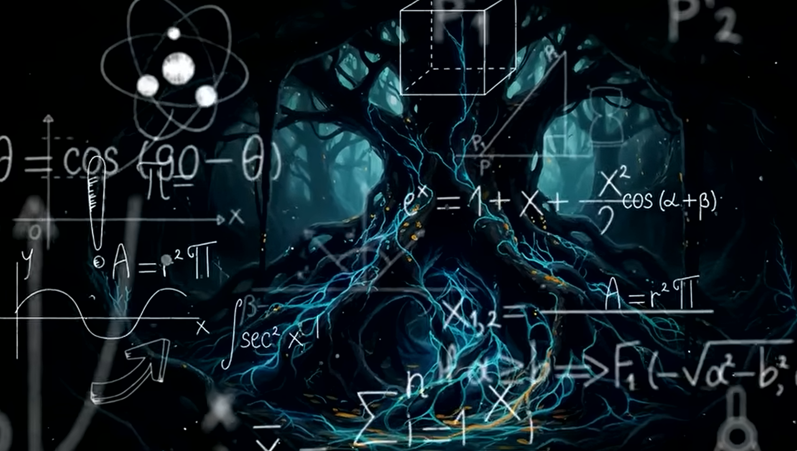
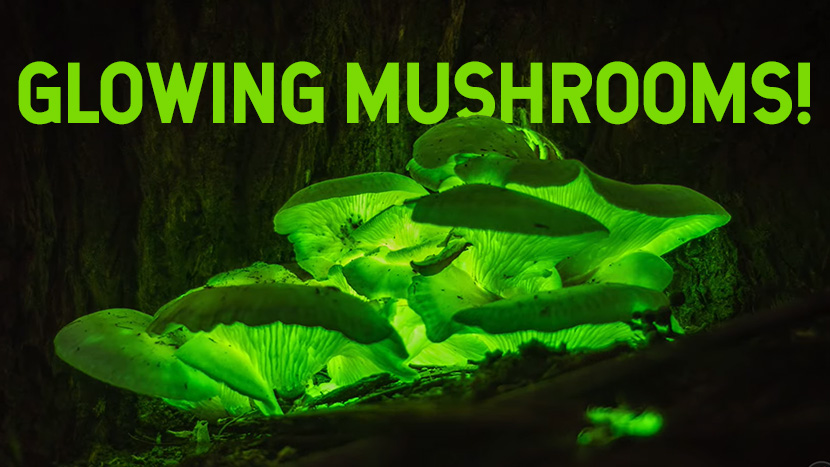
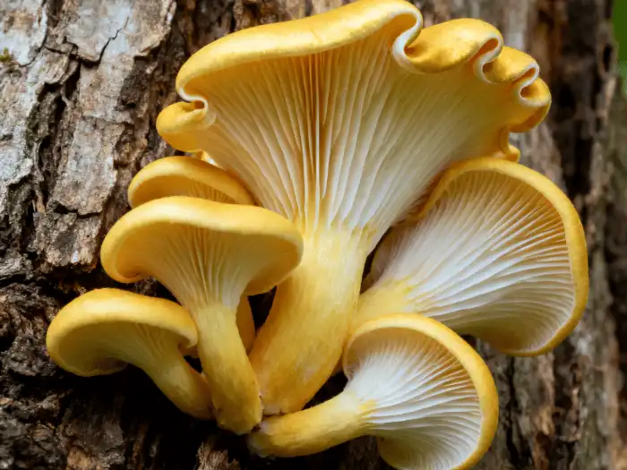

სოკოების ინტერნეტ ქსელი და მათი შესაძლებლობები
მიცელია არიზ უზარმაზარი ინტერნეტ ქსელი რომელიც მთელ პლანეტაზე არის მოდებული ეს იგივეა მაგალითად ციფრულ ინტერნეტ
ქსელს რომ შევადაროთ რომელიც მთელ ციფრულ სამყაროში არის მოდებული და ამავე დროს მთელ პლანეტაზეც ვრცელდება ფიზიკური
სახითაც.

1. სოკოებს შეუძლიათ დავად წარმოქმნან ქარი. როგორ?
აორთქლება: სოკოს ქუდიდან მუდმივად გამოიყოფა წყლის ორთქლი.
გაგრილება: აორთქლებისას სოკოს გარშემო არსებული ჰაერი ცივდება, მძიმდება და დაბლა ეშვება.
ქარის შექმნა: ცივი ჰაერის ჩასვლა და თბილი ჰაერის ამოსვლა ქმნის მინი-მორევს (ლოკალურ ქარს).
2. მანათობელი სოკოები :
როგორ ანათებენ?
სოკოში არსებული ნივთიერება (ლუციფერინი) რეაქციაში შედის ჟანგბადთან. ამ დროს გამოიყოფა ენერგია, რომელიც
სითბოს
ნაცვლად მწვანე შუქად გამოსხივდება.

სოკოები ნადირობით მოიპოვებენ საკვებს
იარაღი: სოკო ნიადაგში უშვებს ქიმიურ ტოქსინებს, რომლებიც მსხვერპლს (პაწაწინა ნემატოდ ჭიებს) მომენტალურად
პარალიზებას უკეთებს.
ხაფანგი: პარალიზებული ჭია ებმება მიცელიუმის სპეციალურ, მომჭერ რგოლებში, რომლებიც შეხებისას წამის მეასედში
იკუმშება.
მონელება: სოკოს ძაფები (ჰიფები) შიგნიდან შედიან ჭიის სხეულში, გამოყოფენ ფერმენტებს და მას ცოცხლად ინელებენ
აზოტისა და სხვა მკვებავი ნივთიერებების მისაღებად.
